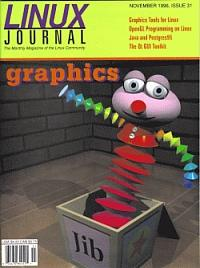

Shutdown Archive web server
Search:
Linux Journal
Issue #31/November 1996

Features
Linux Goes 3D: An Introduction to Mesa/Open GL
by Jörg-Rüdiger Hill
Discover Mesa, a 3D graphics library that is source code-compatible with OpenGL.
Qt GUI Toolkit
by Eirik Eng
Porting graphics to multiple platforms using a GUI toolkit.
Graphics Tools for Linux
by Michael J Hammel
Can you really do professional graphic art on a Linux system? If you're aware of all the available tools, you can.
OpenGL Programming on Linux
by Vincent S Cojot
How one student used Linux and OpenGL to build a 3D, network-capable tank game.
News and Articles
The Java Developer's Kit
by Arman Danesh
LJ
Interviews Larry Gritz
by Amy Wood
The Linux-GGI Project
by Steffen Seeger and Andreas Beck
Java and Postgres95
by Bill Binko
Columns
Letters to the Editor
From the Publisher
Novice-to-Novice
Keyboards, Consoles, and VT Cruising
Product Review
Debian 1.1
Linux Means Business
MkLinux: Linux Comes to the Power Macintosh
Book Review
Inside Linux
Take Command
etags
New Products
Best of Technical Support
Directories & References
Consultants Directory
Archive Index
Shutdown Archive web server
Search:
Copyright © 1994 - 2018
Linux Journal
. All rights reserved.